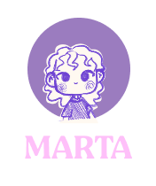
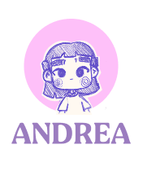
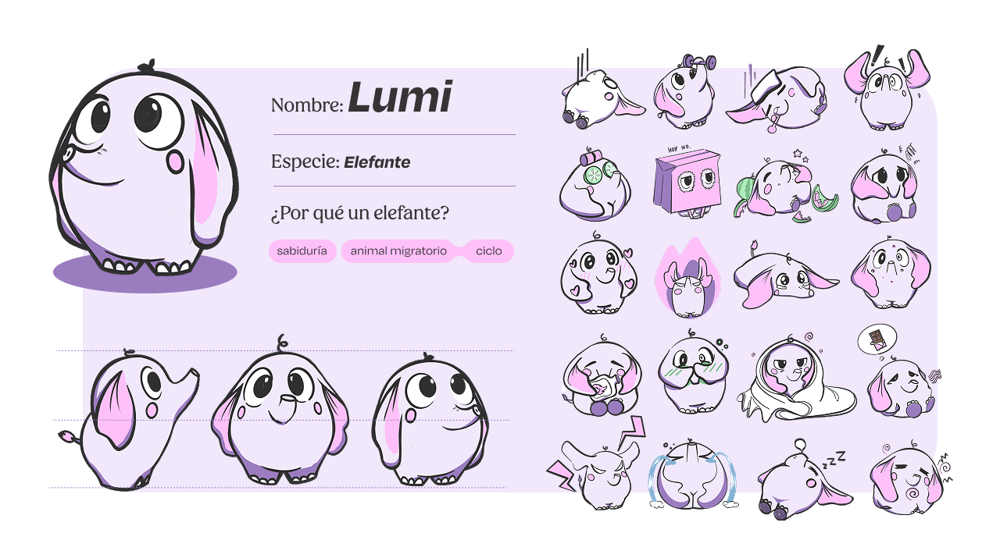
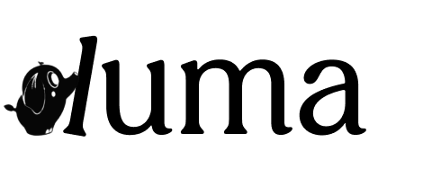
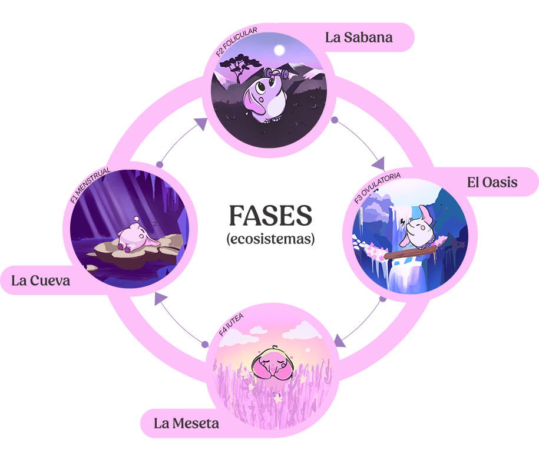

Luma
App de Inteligencia Biológica / TFM Máster UX/UI
El mundo está diseñado de forma lineal, pero la biología femenina es cíclica. Mientras otras apps actúan como calendarios fríos, LUMA traduce los cambios hormonales en una experiencia humana, comprensible y accionable.
Luma es un ecosistema digital de inteligencia biológica que traduce los datos del ciclo menstrual en estrategias operativas diarias para el trabajo, el descanso y el entrenamiento, utilizando una interfaz empática con un avatar dinámico.
El objetivo de negocio principal para la landing page es la Validación de Demanda: conseguir que la usuaria se registre en la "Lista de Espera" para confirmar la necesidad real de gestionar los 28 días más allá de un simple calendario.

Marta (La desconectada funcional)
Necesita validación emocional, permiso para descansar y "hacks" rápidos para no cancelar su vida por el dolor.

Andrea (La optimizadora)
Busca rendimiento, datos y rigor científico para adaptar sus entrenos a sus picos de energía.
"Tu biología no es un caos, es un patrón. Luma es la primera herramienta que transforma tu ciclo en una ventaja estratégica."
Paleta de Color
El diseño se aleja del rosa tradicional. Deep Lavender transmite calma y autocuidado. Los tonos claros reducen la fatiga visual, y el gris casi negro mantiene la armonía sin la dureza del negro puro.
Tipografía
Un equilibrio entre modernidad y cercanía. Serifas cálidas para los títulos y una tipografía funcional, clara y geométrica para los datos.

Lumi, la mascota compañera
Lumi es el elefante que humaniza la app. Su biblioteca de estados reacciona a los datos del ciclo con trazos suaves, sombras coloreadas y degradados orgánicos.
Concepto del Logotipo
- Lumi, el agente de cambio: Representa la fuerza interior empujando la estructura.
- La "l" como linealidad impuesta: La representación gráfica de las expectativas de la sociedad.
- Rompiendo el molde: Al inclinar la "l", la estructura cede ante la naturaleza.
- La fluidez cíclica: "uma" fluye con formas suaves evocando las fases biológicas.


La experiencia de Luma se organiza en 4 fases que mapean las zonas de migración del elefante a lo largo del ciclo, adaptando la interfaz y los consejos a cada momento hormonal.
Recarga y regeneración. Lumi guía hacia el descanso y la introspección.
Energía ascendente. Momento ideal para nuevos proyectos y creatividad.
Pico de energía. La comunicación y la conexión social están en su máximo.
Foco y reflexión. Tiempo de completar tareas y preparar el siguiente ciclo.
Memoria Completa
Documento completo del proyecto con investigación, proceso de diseño y resultados finales.